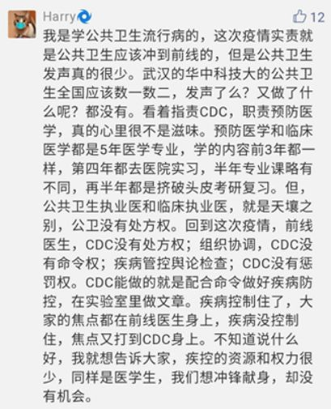
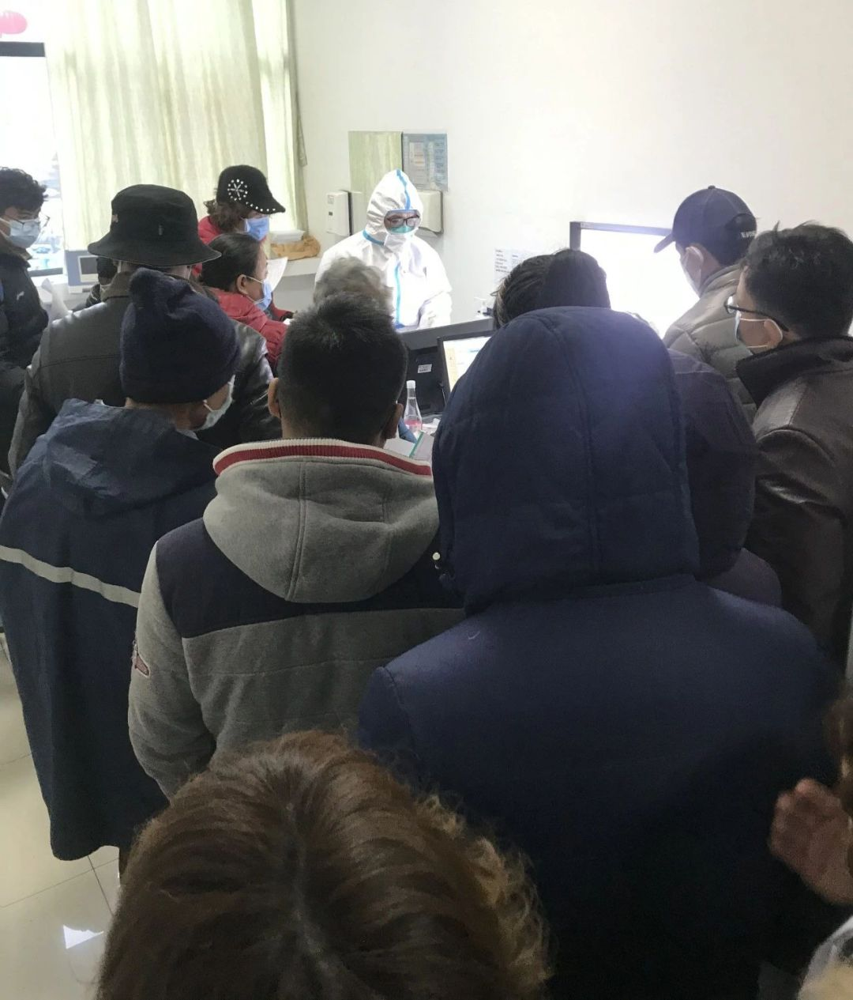

高福回应争议：不能去网络吵架，在研究狡猾病毒
原文链接 备份链接 财经十一人 财经十一人 About Feature 由《财经》杂志公司产业报道团队创建，研讨企业成败，探究行业兴衰，推动阳光商业 Today 新冠肺炎疫情暴发至今，确诊病例、死亡人数均已超过SARS，高福以往言论受到质 …

***********************刘爱国 | 文 ***********************

中国的公共卫生体系改革，历来是诸多系统性改革中，最复杂、最纠结的领域之一。
作为公共卫生的重要一环，2002年以前的中国疾控一直是沿袭苏联的防疫站模式，这一带有高度计划色彩的防疫系统，在以经济建设为中心的时代背景下，随着投入严重不足而逐渐乏力。17年前的SARS危机，将正在酝酿变化的中国疾控系统直接推上了改革火线，带来了中国公共卫生防疫体系的彻底重塑，走上类似西方发达国家的疾控中心（CDC）建设道路。
2016年10月25日印发的《健康中国2030规划纲要》，是建国以来首次把健康作为国家战略提出的中长期战略规划，《纲要》提出了以预防为主、防治结合、关口前移、促进资源下沉的指导性意见，为后续的公共卫生整体建设提供了设计思路。
从时间表上来看，这次新型冠状病毒肺炎的爆发，既是对后非典时代中国医改的一次集中测验，更是对新一阶段中国公共卫生体系改革的一场摸底考试。
非典至今17年，中国的公共卫生体系改革恰恰和医疗改革交叠并行，其中的盘根错节，牵一发而动全身的诸多问题，随着这次武汉疫情的爆发，被再一次推到了公众的视野中。
任何一个体系的高效率运转，都离不开两大要素：钱和人。
SARS危机前的“战疫”逻辑
医疗与卫生，从人类医学诞生以来，就是两个共生却未必共荣的词语。几千年来，除了战争外，传染病几乎成为人类面对的最可怕杀手。在个体治疗并不发达时，通过卫生措施预防疾病，几乎是人类有效应对传染病的唯一法宝。
公共卫生作为一个天生自带利他属性的公共事业，历来都是由国家无条件投入。但是这类开支如同军费一样，只有当战争爆发时，才会直观体现投入价值，继而刺激军费比例大幅度增加。
现代公共卫生的出现与欧洲的工业革命密不可分。随着大量廉价劳动力从农村向城市流入，这类原本卫生意识较弱的人群，聚居在简陋、高密度、卫生条件极差的居住环境中，给传染病的大规模爆发创造了天然的条件。
与小农经济时代分散割裂的社会结构不同，除了工业生产本身带来的诸多卫生问题之外，人口一旦形成大规模流动和聚集，疫情的蔓延概率、防控难度就将呈几何级数增加，出现井喷式爆发。
1842年，英国著名公共卫生学家查德威克发表了现代公共卫生起源史上最重要的文件——《大不列颠劳动人口卫生状况报告》（Report Sanitary of Great Labouring Population Britain）。该报告为六年后英国通过人类历史上第一个现代公共卫生法案（The 1848 Public Health Act）奠定了基础。在这部法案中，明确规定了由中央政府设立专门机构，在公共卫生领域承担责任和义务，包括在供水、排污、垃圾处理、住房等问题上施行行政干预。

1848年，流行霍乱的英国，通过了人类历史上第一个现代公共卫生法案
中国的现代公共卫生起源于战乱年代。战争、饥荒带来人口大面积流动聚集，也导致疫病的蔓延。1910年，伍连德在中国第一次全面应用现代公共卫生理论和方式扑灭东北鼠疫，让中国主流社会第一次看到了现代公共卫生的威力，也为全世界传染病防控贡献了中国经验。
20世纪初期，正是各种疾病大疫肆虐中国的非常时期。在缺医少药的中央苏区，党就把组织群众卫生运动，军民协同开展卫生防病工作，当作关系革命成败的一件大事来抓。1929年，毛泽东同志在起草《古田会议决议》时就指出：军政机关对于卫生问题，再不能像从前一样不注意，以后各种会议，应该充分讨论卫生问题。
在公共卫生上，五六十年代的新中国曾经取得过空前绝后的成就。运动式地开展卫生工作，直接带来了建国后全民健康水平的大幅度提高。
刚结束战乱的新中国，早期的卫生防疫仍然以消除广泛威胁国民健康的传染病和地方性疾病为主要目标，而此时的经济力量和医护人员储备并不允许大办医院。于是在1949年1-月中央军委召开的全国卫生行政会议上，提出了预防在先、预防第一的卫生方针。同年组建的卫生部，也设立有专门的公共卫生局。
如今家中七十岁以上的老人，可能都还对上世纪50年代轰轰烈烈的爱国卫生运动印象深刻，当时举国动员的除四害，提出的主要口号是粉碎敌人在朝鲜战场发动的细菌战争。

1958年，在得知江西省余江县消灭血吸虫病之后，毛泽东主席夜不能寐，兴奋写下《七律·送瘟神二首》
人口大国和多样化的农业经济结构，决定了每天都有可能出现突发公共卫生事件。新中国早期的几场重大战疫，几乎都是以临时性、强制性明显的行政手段来处理危机——从1961年的广东阳江霍乱，到1988年上海甲肝流行，一直到2003年的非典爆发。这种在特定情况下能起到立竿见影效果的处理方式，也造成了整个系统对主政官员应对能力的依赖。
针对疫情组建的临时机构，随着危机的结束而解散，处理危机的宝贵经验没有及时总结、形成系统化制度化的经验和全国共享。
当我们动用举国之力，拿下一场场“战疫”胜利之后，鼠疫、天花、霍乱、结核、血吸虫……这些生于贫穷落后时代的流行病也逐渐退出我们的日常，此刻的中国卫生防疫系统，在经济建设的浪潮中突然陷入了一种空转的迷茫状态。
另外一个同期发生的变化是，随着临床医学的全面崛起，医疗和卫生这两个词，走向了另外一个此消彼长——临床医学走上中心舞台，人们应对疾病的策略和手段转型，卫生开始退居幕后。
把矛盾带入另一个旋涡的，是二十余年的医疗资源市场化。对公共卫生投入严重不足，在无形中形成了一个逻辑陷阱——重治疗轻预防。对于医院来说，收治病人越多，效益越好；而对于防疫站来说，见效并非立竿见影，反而工作开展越多，花销就越大。
1994年的分税制改革，让卫生防疫系统不再享受国家财政的全额拨款。地方财政的捉襟见肘，各地主政官员对经济增长的迷信，让各地防疫站不得不把大量精力转向集体创收，本职业务则主要靠良心、讲奉献，大量非专业人员充斥其中。这一混乱局面一直持续十几年，直到2003年非典爆发才猛然惊醒。

非典时期，在街头发放药物的防疫站人员
再度沦陷的公卫防线
在这次疫情中，频频卷入争议旋涡的中国疾病预防控制中心（以下简称CDC），成立于2002年1月23日。
这个填补中国顶层疾病预防控制机构空白的CDC，最初筹建于2000年，牵头人是时任中国预防医学科学院院长李立明。在论证之初，李立明即提出了大卫生观念下的国家疾病预防控制机构设计理念，在他的蓝图中，公共卫生应当包括疾病预防控制、健康保护和健康促进三个方面，并应考虑生命全过程的卫生保健服务。
中国疾控中心正式挂牌11个月后，非典爆发。这位在非典战役中表现突出、仕途被人们普遍看好的公共卫生专家，却在一年之后，因为一起SARS病毒实验室泄露事件引咎辞职。
SARS危机像一面镜子，将此前中国防疫体系的弊病彻底暴露于世。这场危机之后，公共卫生的重要性被再次提到国家安全层面讨论，数百亿的资金投入到这个领域。到2007年，国内各级疾控中心已有3585个，全职人员共近20万人。全国31个省，98%以上的市和94%以上的县建立卫生监督机构，卫生监督人员近10万人。
这段以非典惨痛教训换来的血本改革，确实在日后发挥了积极作用。
2013年3月，上海等地相继出现了不明原因肺炎的死亡病例，疾控人员一方面迅速在海量资料库里搜索了近万篇文献，同时依托技术储备寻找病毒的蛛丝马迹。经过连续5天的实验工作，终于发现了一种新型的H7N9流感病毒。随后病毒的全部基因密码被迅速破解，确认了病原体，研制出的检测试剂被立即发往全国。实现了对新型病原的严密监测、迅速确认和应急反应，为政府制定防御措施提供了科学依据。据原中国CDC主任王宇回忆，日后世界卫生组织（WHO）对此次事件的评价是：中国应对H7N9禽流感疫情，堪称全球典范。
然而仅仅7年后，武汉突发的疫情，却让中国的疾控中心再次饱受质疑——为何针对这次病毒的研究效率远超当年，信息通报却如此滞后？
直接把中国CDC推上风口浪尖的是网友热议的论文事件。被无端劝留在家的网友们，一时间将所有的怨气都集中撒向CDC——为什么到了这个时候，你还有空发论文，而不是直接公布信息？
作为直接的当事方，中国CDC也随即回应叫屈：
论文提出的‘人传人’观点是回顾性推论，目的是及时发布信息，有助于国内外专业同行及时了解疾病特征，共同评估和研判疫情，改进防控策略。
这次事件，也折射出CDC目前在中国卫生系统中的尴尬地位。中国CDC流行病首席科学家曾光在接受《中国新闻周刊》采访时谈到：相比美国的疾控中心是政府部门，中国的疾控中心只是一个干活的事业单位，没有决策权。而一位一线从业者的评论留言则更具体：

美国加州大学洛杉矶分校公共卫生学院副院长、流行病学资深专家张作风教授在接受《知识分子》专访时也表示：
这次疫情，公共卫生流行病学专家全线静悄悄，与政府和管理部门对预防医学和公共卫生的不重视有主要关系。
然而这些申辩，迅速淹没在一浪高过一浪的网络情绪中。但是问题的答案，或许恰恰隐藏在这些微弱的声音中。
2003年非典初期的教训，相当部分正是源于当时公共卫生体系的脆弱无力。对疫情严重性的认识不足、对病原体的争论、协调机制的缺乏、信息披露的严重滞后，使政府在SARS的第一轮遭遇战中坐失良机，陷入被动。

SARS全国疫情传播链
有专家分析，这次武汉疫情的早期阶段，仍然有与当年类似的因素在影响疫情发展。除了病毒确实来势汹汹外，一系列初期应对滞后带来的连锁反应，导致错过了控制疫情蔓延的最佳窗口期，造成后来八方驰援、四处堵漏的被动局面。
本该成为疫情第一道防线的公共卫生体系，为何却在这次武汉战疫中再度沦陷？
加深的医卫裂痕
审视任何一项改革的得失，都需要从特定的时空背景下来寻找参照物。在全国疾控系统接近重编完成之时，恰逢卫生系统的另一件大事——新医改战车的轰然启动。
这场酝酿于2006年、启动于2009年的新医改，核心是解决基本医疗服务的公平问题。而其中负责筹资和分配的主导角色，主要由政府来担当。
对于公众医疗来说，医疗卫生资源的有限性和公众医疗卫生需求的无限性，永远是最根本的矛盾。这就涉及到资源在投入和分配时，不可能全面照顾，必然会有侧重、分阶段地投入。
对于各级政府来说，花了多少钱，治疗了多少病人，是一个可以量化的政绩指标。大笔资金优先投入到中段的治疗环节，保障生病患者解决就医问题，是最能体现改革成效的一项举措。而上游的预防环节，工作做得越好，反而越太平无事——难以量化评估的成效，让公共卫生和疾控系统再一次成为被冷落的角色。
这个问题从2014-2019这五年间的投入经费便可看出。2014年，国家公共卫生专项任务经费的项目拨款为5.29亿，而到了2019年，这笔预算下降到4.5亿，同比下降14.9%。反之，2014年对公立医院的财政拨款为36.19亿，到2019年，这一预算增加到50.23亿，同比增长38.8%。
另一个数据是，公立医院总数量在2014-2019这五年里减少了1364家，疾控中心数量却几乎稳定不变。也就是说，这笔经费要继续养活国内3000多家疾控机构。而随着各体系人员待遇的普遍水涨船高，分摊到每家机构的经费预算可见一斑。
这一轮此消彼长的背后，医疗和卫生两个体系之间的裂痕被再一次放大。
这种举措带来的另外一个悖论是，坐堂行医的医院，实际状况是在等人生病，只治不防——这是一种被动式、断裂的医疗服务链。而对于国家来说，在临床治疗环节投入越多，资源消耗越快，也导致医疗费用不正常的无序增长，钱越来越不够花。
这种中段灭火、越扑越旺的投入方式，间接带来了对公众医疗卫生教育的无暇顾及，反之却是看病人数的激增。根据2019年国家卫健委公开的预算，全年投入到公共卫生宣传的拨款仅有700万元。这对于一个14亿人口的大国来说，几乎是一个难以想象的数字。
这就造成了阻滞医改的一大新恶性循环——优质医生和医疗资源集中在大型公立医院，公众对医疗卫生疾病缺乏基本知识，头疼感冒全部往大医院挤。这次武汉肺炎早期，发热症状者纷纷涌向协和、同济等三甲医院，造成对医疗资源的严重挤兑，不仅耽搁自己就医，还极大地增加交叉感染的风险，便是这一恶果的直接体现。

人满为患的三甲医院门诊（图片来源：新京报网）
另一方面，资源配置的失衡，导致人才自然往高处流动。对于一些有抱负、有能力的医学人才来说，公共卫生系统成了一个没有前途的地方。
其次，2018以来，疾病预防控制机构的待遇开始按照参公事业单位试点改革，但收效甚微，非典以来，逐步取消了原来的营利性收费项目，退出市场化投资与经营。虽然公益性、服务型色彩更加浓厚，但是捉襟见肘的经费投入，也直接带来了从业人员的整体收入下降。丧失奋斗动力的一线人员，大量时间在应付国家下达的各种指标任务。
同样是事业单位，公立医院一边享受着国家的拨款，一边在继续开展着尾大不掉的营收项目；而另外一边的疾控中心，只能在回归公益性服务的行政命令下节衣缩食，在整个卫生系统中被逐步弱化、边缘化。
2019年6月，国务院发展研究中心召开的中国医改十年研讨会上，曾光教授便犀利指出目前疾控系统的人心浮动和人才加速外流现状：
近三年来，仅国家疾控中心流失的中青年骨干计有百人之多，有些地方疾控机构人才流失可能更严重。
与人才流失并行的，是系统内人才评价标准的错乱，科研导向与实用导向混淆不清——对各级公共卫生机构的人员评级、晋升、选优都要求拿出科研成果，选人用人唯学历、唯职称论。实际上，很多市县一级的公共卫生机构，根本不具备科研的条件，也没有科研的必要。
相对于逐渐提高学历要求的医院来说，在整个卫生系统中，疾控中心还算是一个低门槛的铁饭碗。这也导致了在各地公共卫生队伍中，充斥着大量非专业人员和关系户，在系统内形成了所谓的占位性病变。
医疗教育的精英化，也让整个卫生系统弥漫着一股招人用人追求高大上的盲目风气。医学博士满天飞，稍有能力的人都不愿意到疾控中心，更不愿意从事基层工作——这场围堵病毒的全国联防战中，也直接暴露出诸多基层疾控人员，包括卫生管理人员的专业性缺乏问题。
以上种种客观现象叠加，形成了新医改中这一对纠结的矛盾共同体。但是我们也不能因此忘了一个重要的主观因素——近年来人们对传染性疾病防治意识的松懈。
随着现代人生活水平的提高、生活方式的变化和生活节奏的加快，公共卫生的关注重点逐步转向慢病防控，例如对心脑血管疾病、肿瘤、糖尿病、呼吸系统疾病（慢性阻塞性肺疾病）、癌症等非传染性疾病的预防工作。而对于突发性、区域性明显的传染性疾病的防控，人们从意识深处似乎已经放松了警惕。正应了那句话：
只有当危机来临时，人们才会想起它的重要性。
百年大计
近日，黄奇帆发表专题文章，提出疫情下对中国公共卫生防疫体系改革的建议。文章认为，从整个社会治理的角度来看，中国各个城市目前都还缺少一套完善的公共卫生体系、传染病防范体系、ICU重症隔离资源管理体系。他指出：
预防型的公共卫生防疫体系建立是百年大计，具有长远投资效益。
从社会经济发展全局高度，我们需要重新梳理公共卫生体系建设的定位和价值，而从卫生系统内部，则需要首先破解弥合裂痕的难题。
世界卫生组织（WHO）的各国专家们，近年来纷纷将弥合裂痕作为战略口号提出。
这并非中国特色的难题。在西方国家，弥合裂痕的课题早在上世纪七十年代便开始探索，美国原洛克菲勒基金会健康部主任卡尔L·怀特，在其1991年所著的《弥合裂痕——流行病学、医学和公众的卫生》一书中，也提到了这项努力在早期所陷入的尴尬：
1.费用上涨
2.资源分配不当
3.医学领域内人员分布的高度不均
4.误将技术进步当做科学进步
……
书中指出，这些在发达国家日益严重的现象，在发展中国家则更加混乱。作者同时也提出自己的观点：
最理想的公共卫生服务是在管理和分配方面，基于以流行病学为基础的信息系统，各类学术机构、管理机构和卫生保健工作人员相互协调的有机结合体。
哈佛大学公共卫生学博士、北京大学公共卫生学院教授宁毅近日指出，疫和病是完全不同的两个概念。防控疫情，需要具备全局性、系统性的思维。
在传染病防控中，相对于救治更多是在战术层面施策，公共卫生和疾病防控才是在战略层面的体系保障。
这次武汉战疫之后，或许我们需要认真反思的，是如何让医改不仅仅沦为片面的医院改革或者医药改革，而是真正成为保障人民生命健康的大卫生改革。
除了经费、资源的平衡投入外，还有人才结构的优化和整体机制的健全。
公共卫生管理具有极强的专业性，但却又远远超出单纯的医学范畴。除了医疗和科研系统外，其广泛连接公共管理、应急保障、文化教育、体育运动、舆论宣传、街道社区、环卫城建等若干个社会治理分支系统。
这次全国抗疫中，有两位具有公共卫生专业履历的省级官员备受关注：
一位是四川省长尹力，曾在苏联学习卫生经济与卫生事业管理专业，此前长期在国家卫计委分管公共卫生应急指挥工作。本次四川防疫部署，一度被网友热议为教科书级别的抗疫。
另一位则是刚刚临危受命，从国家卫健委空降担任湖北省委常委的王贺胜，毕业于天津医学院卫生系，同样具有丰富的卫生系统管理经验。
另一个现象是，这次各地因抗疫不力被问责或者免职的卫健系统官员，则大多数不具备医疗或者卫生管理专业背景。这也侧面反映出了当前卫健系统中，专业管理型人才的严重不足，以及管理岗位选才用人的问题。
相对于某些临床和学术领域的专家型人才，公共卫生领域的人才往往有其所长——知识面更杂、涉及面更广，更适合在某些特定领域担任管理角色。
弥合裂痕，带给从业队伍建设的思考，是如何从教育改革入手，培养多层次、复合型、应用型的人才梯队，而不仅仅是研究室里的专家。在机构内部，推行分层、分类、分级的考核评价体系，以保证人才资源的最合理配置。
从机制保障上，给专业疾控机构充分赋权，简化行政审批，完善立法，健全针对重大突发性传染疾病的联动响应机制，并设立危机应对的常备队伍。
从健康教育上，加大健康教育和全民疾病科普，转变以预防为主，防治结合全民健康理念……
实际上，上述建议和措施，近年来在各路公共卫生专家的建言献策中也纷纷提到，在某些地区也局部推行过试点改革尝试，但是从全国范围来看，从上至下缺乏根本性动力，仍然是全局性改革推进迟缓的最主要原因。
人们总是容易好了伤疤忘了疼，就像这次再度在野味上栽了跟头一样。
世界没有如果
我们不可能预测得到，像SARS、新冠这样的病毒，下一次会在何时何地再次袭击我们。
我们也无法假设，如果没有这场灾难，我们是不是还在侥幸中继续着对野生动物的饕餮。
逝去的生命无法再挽回，但一次次危机却不断鞭策我们进步。
人类工业化进程造成的生态失衡以及生活方式的变化，已经导致新的传染性疾病频频出现，不少曾经征服的古老疾病正在卷土重来。
中国史无前例的人口基数、加速的城市化进程、随着经济活动和交通发达而大大增强的人口流动性，为传染病的流行爆发埋下了种子。
动荡的世界和基因技术的发展，让生物危机的潘多拉魔盒打开只是时间问题。
我们不能将每一次战胜危机的希望，都寄托在政府的应急施策，寄托在医护人员的舍身救治，寄托在各行各业的众志成城上。不能等到病毒攻陷我们的城市和日常生活的时候，我们才用血肉之躯筑起最后一道防线。
世界没有如果，也不会因为灾难而重启。反思灾难，是因为我们的生命只有一次，而这仅有一次的生命，其实非常脆弱。
毕竟，我们创造美好的生活，也是为了更健康的活着。
参考文献：
[1] 黄建始《从SARS危机看中国应建立什么样的公共危机应对体系》，2003
[2] 陈日华《19世纪英国城镇卫生改革》，2007
[3] 蒋浙安《查德威克与近代英国公共卫生立法及改革》，2005
[4] 陈健尔《中国医疗卫生改革回顾和展望》，2007
[5] 新华社《全国98%以上市和94%以上县已建立卫生监督机构》，2008
[6] 唐金陵《疫情肆虐下的公共卫生回望与思考》，2020
[7] 曾光、黄建始、张胜年《中国公共卫生》，2009
[8] 神州学人，杨宇《李立明的「大卫生观」》，2016
[9] 首届中国疾控中心主任年会，李立明《中国公共卫生领域热点问题回顾》，2002
[10] 民生周刊，《王宇：疾控保障应由政府全额投入》，2014
[11] 胡大一《弥合裂痕，应对挑战——论全面实施以人民健康为中心的健康中国战略》，2019
[12] 黄奇帆《疫情下对中国公共卫生防疫体系改革的建议》，2020
[13] [美]卡尔L·怀特著，张孔来等译《弥合裂痕——流行病学、医学和公众的卫生》，1995
本文系作者个人观点，获权转自“钛禾产业观察”


责编 | 黄端 duanhuang@caijing.com.cn

原文链接 备份链接 财经十一人 财经十一人 About Feature 由《财经》杂志公司产业报道团队创建，研讨企业成败，探究行业兴衰，推动阳光商业 Today 新冠肺炎疫情暴发至今，确诊病例、死亡人数均已超过SARS，高福以往言论受到质 …
原文链接 备份链接 世界卫生组织（WHO）总干事谭德塞在2020年1月30日宣布：新冠疫情的全球性暴发，已构成“国际关注的突发公共卫生事件”（PHEIC）。 谭德塞同时强调，这一宣布是基于新冠疫情在中国以外的发展情况，而非针对中国国内 …
原文链接 备份链接 非常时期，武汉成了全国人民挂念、祈福的城市。封城后，武汉人民的真实生活是什么样？ 随着疫情援助的展开，又有哪些容易忽略的问题？ 正和岛自1月26日起特别推出《叶青：我在武汉疫区的第N天》专栏。叶青是一位定居武汉40年的 …
原文链接 备份链接 一周多前小南发起了一场征集——“疫情过后你最想做的一件事”,得到了读者朋友们的积极参与。下文是00后武汉大学生薛珂发来的一篇自述。 文 | 薛珂 编辑 | 小豆 出生于2000年，今年虚岁20，我是武汉华中科技大学的一 …
原文链接 备份链接 所有的鱼现在同步在 allthefishnews.wordpress.com 更新并可通过邮件订阅。你可以复制上方链接浏览器打开获取订阅链接。 *点击 阅读原文 可查看昨天的推送 根据丁香医生实时数据，截至 2 …